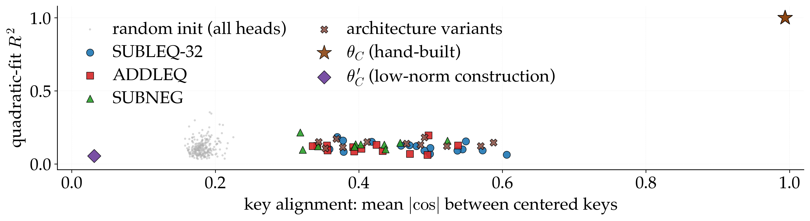
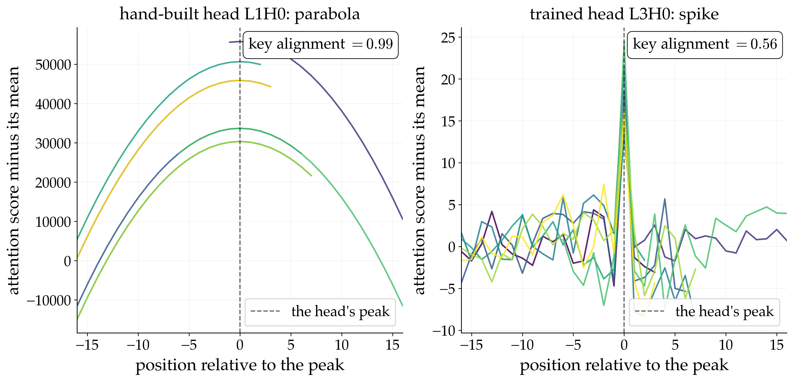

We wired a transformer, by hand, to be a computer. Then we trained a second one, from random noise, to do the same job. Both run the machine, and both read the same memory cells. But they find those cells in two different ways. Here is how we found out, and why it matters.
In collaboration with Microsoft Research · “Gradient descent teaches a transformer to be a SUBLEQ computer with a different memory-addressing than a hand-built circuit.”
The paper — and the code — are available on request at anastasios@rice.edu.
This line of work was inspired by Dimitris Papailiopoulos’s essay “Can You Train a Computer?”
A transformer’s attention “points” at a memory cell by matching a query against a key. We set the weights of a small transformer by hand so that its attention and ReLUs execute SUBLEQ, a one-instruction computer: of its 3.29 million weights, only 1,043 are nonzero, and it executes every step we tried exactly. We also trained a transformer of the same shape from scratch to do the same job. On states it never saw, drawn from its training distribution, it gets 99.93% of steps exactly right; fed its own output, it runs programs reliably for 16 steps while they run, though it has not learned to stay put once a program halts. Do the two work the same way? Comparing their weights says “no,” but with the matchings we tested, that test says the same about two trained networks that differ only in their random seed, so it cannot answer the question. Looking inside can. Both networks read the same cells, and they find them differently: the hand-built heads search, with the address carried in the query, while the trained heads read a mark that earlier layers put on the target cell.
There is a programming language with exactly one instruction. It is called SUBLEQ — short for “subtract, and branch if less-than-or-equal to zero.” That is the whole instruction set. You give it three addresses; it subtracts the contents of one memory cell from another, writes the result back, and then, if that result came out at or below zero, it jumps somewhere else in the program. Then, repeat. It sounds far too meagre to do anything. It is, in fact, Turing-complete given unbounded memory: with enough of these little subtract-and-branch steps, and enough memory, you can compute anything any computer can compute.
That makes SUBLEQ a beautiful object for one specific experiment. The computer is simple enough to hold in your head, and you can build it out of unusual parts. Our unusual part is a transformer, the architecture behind modern language models. SUBLEQ lets us pin down an old, slippery question: when a neural network is trained to do a job we already know how to build by hand, does it end up working the same way we would have built it?
SUBLEQ = SUBtract and branch if Less-than-or-EQual to zero. One instruction, three operands \(a, b, c\): compute \(\mathrm{mem}[b] \leftarrow \mathrm{mem}[b] - \mathrm{mem}[a]\); if the result \(\le 0\), jump to instruction \(c\), otherwise continue.
It is a one-instruction set computer (OISC), and, given unbounded memory, it is Turing-complete. The machines we build and train are finite, with 32 or 16 memory cells. That extreme simplicity is exactly what lets us hand-build a transformer that runs it, and check a trained one against the ground truth.
There are two different ways to get a transformer to run SUBLEQ, and the paper is about what happens when you compare them.
The first way is to wire it by hand. Following a line of work showing that transformers can be constructed to loop like little programmable machines, you choose the weights so each layer performs a piece of the subtract-and-branch: attention heads that fetch the right operands from memory, ReLU units that do the arithmetic and the comparison. Call this hand-built network \(\theta_C\), C for constructed. It is very sparse: of its 3.29 million weights, only 1,043 are nonzero, and only 180 of those sit inside the four transformer blocks. It executes a step exactly on every one of 100,000 random states, because we told it precisely how.
The second way is to train one from scratch. Start from random noise, show it examples of single SUBLEQ steps, and let gradient descent find weights that reproduce them. Call this network \(\theta_T\), T for trained. It has the same architecture as \(\theta_C\). On states that never occur in its training data, it predicts the whole next state correctly 99.93% of the time. It was only ever shown single steps, yet it can run programs: feed it its own prediction as the next input, and after 16 steps the whole state is right for 99.6% of the programs still running, so errors barely compound. What it has not learned is to stay put once a program halts, a state its training never showed it.
So now we have two networks. Both run the same computer, one exactly and one almost exactly on single steps. One we built; one we grew. The obvious next question, and the whole reason to set this up, is whether they are secretly the same machine underneath.
How do you check whether two networks “learned the same algorithm”? One common instrument is a weight-space test called mode connectivity. Line up the two networks’ weights and walk in a straight line from one to the other, watching the accuracy. If they are the same solution in slightly different clothes, every network along that path should keep working — you slide from one to the other without falling off a cliff. If accuracy collapses in the middle, they sit in different “basins,” and the usual conclusion is: different algorithms.
We ran it. We first lined the two networks up with five standard matching methods, then drew the line. On every line we measured, the networks in the middle get at most 1.2% of states right, even on a curved path trained for the purpose. By the letter of the standard test, the verdict is clear: two different algorithms, in two different basins.
But there is a second instrument, and it says something else. Instead of comparing raw weights, a mechanistic probe asks what each network is doing. The hand-built network tells us exactly which cell each of its heads reads at each stage of a step, so we can look for trained heads that read the same cells. They exist. Two heads of the trained network, L3H0 and L3H3, make exactly the hand-built network’s two pointer reads: they read the cells that operands \(a\) and \(b\) point to, \(\mathrm{mem}[a]\) and \(\mathrm{mem}[b]\), and they hit the right cell on every one of 3,000 fresh states. Same job, same reads.

So which is it: same algorithm or not? With the matchings we tested, the weight test cannot settle it. Draw the same line between two trained networks that differ only in their random seed, and the networks in the middle get no full state right either. A test that gives the same verdict for two networks that work alike cannot tell us whether these two differ (Section 6 comes back to this). The probe says the two networks make the same reads. It does not yet say how each network finds the cell it reads. That is where the real difference lives.
Attention points at a memory cell by an overlap: a dot product between a query vector and a key vector for each position. The position whose key best matches the query wins. There are two simple ways to make the target cell win.
A head can search. The query carries the address, each key describes its own position, and the score is highest where the two agree. This is how our hand-built network works: its scores form a parabola over positions that peaks at the target. Or a head can look for a mark. Earlier layers flag the target cell, and a query that does not depend on the address picks out the flagged key.
You can see the difference in the scores themselves, the numbers that go into the softmax. The hand-built head draws a parabola. On a parabola, the neighbors of the peak score almost as high as the peak, so the parabola must be steep for the target to beat them clearly, and over 33 positions a steep parabola covers a huge range: about \(10^5\) logits here. The trained head draws a single spike at the target, and its scores range over tens of logits.

A spike alone does not prove a mark: we built a second hand-built head that searches and still draws a spike. So we need a test that asks directly where the address lives. The swap test does this, using only a head’s own queries and keys.
Take two states, A and B, on which a head picks different cells. Score the query from A against the keys from B. If the highest score lands on the cell the head picks in A, the address came with the query: the head searches. If it lands on the cell the head picks in B, the address came with the keys: the head reads a mark.
The hand-built heads follow the query in every pair. The trained pointer heads L3H0 and L3H3 follow the keys, in 99.8% and 100% of pairs. A second test agrees: replace the query by its average over states, and the two trained heads stay on target in nearly every state, while the hand-built heads stay on target in at most 13%. So when the trained network follows a pointer, the address is not in the query. Earlier layers have written it into the keys.
Why would training pick the spike? We do not know yet, but we can price the two shapes. Measure the cost of a score shape by the range of scores it needs, since a wider range needs a longer query or keys farther apart. For a head to put 99% of its attention on any one of 33 positions, a parabola needs a range of at least 1,353 logits, whatever its weights. A spike needs about 8. The trained ranges, 9 to 42 logits over the twelve networks of our main study, are of the same order as that minimum, and a network trained without weight decay keeps them below 30, so weight decay is not what keeps them small. This prices the two shapes. It does not explain why training picks the cheaper one.
One trained network could be a fluke of its random seed. So we trained eleven more and repeated the probe, the score measurements and the swap test on all twelve: four seeds of SUBLEQ, four networks on ADDLEQ and two on SUBNEG (variants of the machine that change the arithmetic or the branch condition), a 6-layer network, and a narrower network of width 128. The probe finds 50 heads in these twelve networks, and every one of them has scores far from a parabola. All 32 pointer heads, at least one in every network, follow the keys in the swap test, 31 of them in at least 90% of pairs. The 18 heads that read operand \(c\), at a fixed offset from the program counter, are mixed: 6 follow the keys, 5 follow the query, and for 7 neither side wins a majority of pairs.
| Hand-built | Trained | |
|---|---|---|
| Scores over positions | parabola (\(R^2 = 1.00\)) | far from a parabola (\(R^2 \le 0.22\)) |
| Score range (logits) | about \(1.2\times 10^5\) | 9 to 42 |
| Pointer heads take the address from | the query (2 of 2) | marked keys (32 of 32) |
| Key alignment (1: all keys parallel) | 0.99 | 0.32 to 0.61 (median 0.43) |
| Size of all weights (Frobenius norm) | \(1.17\times 10^5\) | 93 |
Six more networks of the same family agree on the scores: three further architectures (two with LayerNorm), two more machine variants, and the network trained without weight decay all have scores far from a parabola. LayerNorm raises the key alignment of sharply attending heads, to at most 0.80, still below the hand-built network’s 0.99. (We ran the swap test on the twelve networks above only.) Nor is the trained network a cluttered copy of the hand-built one: pushing about 99% of the weights in its layers to zero with an \(L_1\) penalty leaves its scores far from a parabola and keeps most of its heads’ roles.
Outside this family we have one data point. A network trained on a different task, reversing a sequence, also has scores far from a parabola. One network cannot tell us how far the pattern travels: whether the same mechanisms appear in other tasks, or at scale, is open.
We are equally careful on two other fronts. First, the overlap between the networks is partial. In the trained network (seed 42), the probe finds four heads: the two pointer heads, and two heads that read operand \(c\). The hand-built network’s other roles, such as reading operands \(a\) and \(b\) themselves, have no single matching head. Removing heads shows that the four carry part of the step, not all of it: with all 32 heads removed, 21% of the changed tokens are still right; keeping only the four gives 45%, against 29% for four heads kept at random. One head the probe did not find, L2H0, matters more than any it did: removing it alone drops the accuracy to 50%. We do not yet know what it computes. It sits one layer below the pointer heads, so it is a natural candidate for writing the mark they read. Second, the trained network learned single steps. It runs programs reliably while they run, but it never learned to stay put after a program halts. We are not claiming a general-purpose computer fell out of gradient descent. The claim is narrower, and we think more interesting.
Step back and there are two lessons. The first is about tools. Here is a case, rare because we hold the ground truth, where we can check the field’s standard weight-space test for “did these two networks learn the same algorithm?” It fails the cheapest check there is. Draw the line between two trained networks that differ only in their random seed, whose pointer heads both read a mark, and the networks in the middle get no full state right. With the matchings we tested, the test cannot tell a different algorithm from a different random seed. The barrier between the hand-built and trained networks is far higher than between the two seeds, but the hand-built weights are also far larger (about 1,300 times, almost all of it in the output layer), and they stay far larger even after we shrink them 19-fold without changing any prediction. So the height of the barrier mixes size with mechanism. Stronger matching methods exist that we did not run; whether they make the weight test informative here is open.
The second lesson is about training. A correct construction need not predict what training builds. Both networks make the same two pointer reads, but training made them with scores thousands of times smaller, and its pointer heads mark the target instead of searching for it, in all twelve networks we checked. What settled the question was looking inside, with a probe we could check against a network whose every step we know. The practical takeaway for interpretability: before you trust a tool’s verdict on two networks, check it on a pair whose answer you know.
We rarely get to check our interpretability tools against the truth, because we rarely know the truth. SUBLEQ gave us that rare thing: a network we understand completely, standing next to one we merely trained, both running the same machine. Held up to the light, they turned out to read the same cells and to find them in different ways, one by searching and one, at its pointer heads, by reading a mark. The weight comparison, with the matchings we tested, could not tell that difference from the difference between two random seeds. What gradient descent actually picks, when it is free to pick, is a hard thing to see. Once in a while, with the right toy computer, you can catch a clear glimpse of it.
Results are from the twelve trained networks of the main study (four seeds of SUBLEQ, four of
ADDLEQ, two of SUBNEG, a 6-layer and a narrower network), plus six more networks of the same family for the
score shapes. Every number here matches the paper. The full write-up, the mechanistic analysis, and the code
are available on request at anastasios@rice.edu. By Anastasios
Kyrillidis (Rice University), in collaboration with Microsoft Research.
Updated November 2026. An earlier version of this post said the trained network points at
memory with nearly orthogonal keys and is exact on every single step, that it ran 802 of 804 test programs, and that the hand-built network has about a hundred nonzero weights. The key measurement used inputs the heads do not actually receive; the trained network is exact on 99.93% of unseen steps; the paper reports no such program count; and the hand-built network has 1,043 nonzero weights. The post now reports what later tests confirmed: the hand-built heads search, and the trained pointer heads read a mark.
Open-source ML/AI algorithms research at Rice CS.